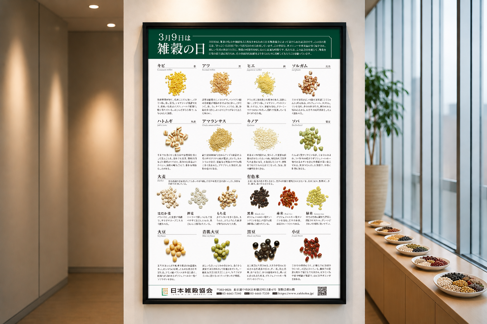

Works 情報を整理する
多彩な雑穀の特徴を、
ひと目で学べる
図鑑ポスターへ。
イベント会場の上部に大きく掲示するため、
離れた位置からでも内容を把握できる
図鑑型ポスターを制作しました。
支給された写真と原稿を種類ごとに整理し、
雑穀の名前、特徴、食感を見比べやすい構成にしています。

ご相談から完成まで
-
01
ご要望
イベント会場に大きく掲示し、
雑穀の種類や特徴を辞典のように
紹介したい。 -
02
設計・制作
支給された写真と原稿を
種類ごとに分類し、
名前、写真、特徴を同じ流れで
読めるよう整理しました。 -
03
完成
落ち着いた配色と規則的なレイアウトで、
離れて見ても探しやすい
雑穀図鑑ポスターに。
完成デザイン
案件情報
- 業種
- 食品・業界団体・イベント
- 制作物
- 雑穀の日ポスター
- 仕様
- B2・片面
- 掲載内容
- 展示会・イベント会場での大型掲示
- 担当範囲
- 情報分類・レイアウト設計・デザイン・編集
- 支給素材
- 原稿・雑穀写真・団体情報
- 使用ツール
- Illustrator / Photoshop
- 制作期間
- 5日
多くの写真と解説を共通のルールで整理し、
離れて見ても、近づいて読んでも分かりやすい図鑑ポスターへ。
情報量と一覧性の両立を大切にしました。